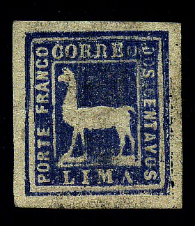
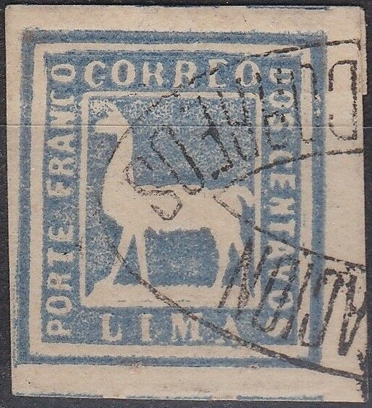
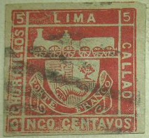

I've been told that the first stamp is genuine.
Pérou
Return To Catalogue - Peru 1857 -1873 - Peru 1874 -1894 - Peru 1895 -1920 - Miscellaneous - Local stamps, part 1 - Local stamps, part 2 - PSNC stamps - fiscal stamps
Note: on my website many of the
pictures can not be seen! They are of course present in the
catalogue;
contact me if you want to purchase the catalogue.
I've been told that the first stamp is genuine.
2 c blue
Value of the stamps |
|||
vc = very common c = common * = not so common ** = uncommon |
*** = very uncommon R = rare RR = very rare RRR = extremely rare |
||
| Value | Unused | Used | Remarks |
| 2 c | RR | RRR | |
Genuine stamps with forged cancels exist (used stamps are roughly 10 times more valuable than unused ones). And according to the book "Peru Postal Cancellations 1857-1873" by Georges Lamy and Jacques-Andre Rinck (1964), even genuine cancels on forged stamps exist. This book states that reprints have sharper embossing and were printed on thinner and whiter paper than the originals. It also says that only cancels from Lima exist (this was a local stamp, only used in Lima), cancels from any other town can be considered forgeries.
Forgeries of this stamp exist, examples:

According to the Serrane guide, the original stamp has a thinner
left frameline than the other framelines (this information can
also be found in the book "Peru Postal Cancellations
1857-1873" by Georges Lamy and Jacques-Andre Rinck (1964). A
reprint (the above stamps?) exists with the left frameline
thicker.


Imitations in grey colour. According to the Serrane guide, these
grey forgeries are based on the reprint. If my information is
correct these forgeries and reprints were produced by Mr.Eberhard
in Valparaiso. The 10-leafed cancel or 'star' does exist as a
genuine cancel: see "Peru Postal Cancellations
1857-1873" by Georges Lamy and Jacques-Andre Rinck (1964),
Plate 5.



Some cancels that I've seen on these stamps. I'm not sure if
these are genuine or not, but they are most likely forged
cancels. The oval "ADMINISTRACION CORREOS" and the
"LIMA PRINCIPALE" are certainly forged, since they are
listed in the Lamy and Rinck book. .


A 'Tapling Essay'(?) in red or a forgery? The design is identical
to an illustration in the Stamp Collectors Magazine 1874 Vol 12,
page 13. This could be the forgery described in "Peru Postal
Cancellations 1857-1873" by Georges Lamy and Jacques-Andre
Rinck (1964), where it is stated a forgery exists where the hind
leg is pointing to the "A" of "LIMA" and the
"N" and "T" of "CENTAVOS" are
connected. This type is even listed on an envelope in their book.
Next to it a very similar product in blue color.


Crude forgery although it appears to be engraved. Next to it
another forgery without ground, but a bit better executed.
Another forgery with no white ground below the feet of the llama is shown in "Peru Postal Cancellations 1857-1873" by Georges Lamy and Jacques-Andre Rinck (1964).

5 c red
Value of the stamps |
|||
vc = very common c = common * = not so common ** = uncommon |
*** = very uncommon R = rare RR = very rare RRR = extremely rare |
||
| Value | Unused | Used | Remarks |
| 5 c | RR | RR | Two shades of red exist |
This stamp was supposed to be used on letters carried by the
railroad between Chorillos, Lima and Callao. The stamps were
printed one at a time in a long band (thus only pairs or strips
can exist, no blocks, source: 'The World of Classic Stamps' by
J.A.Mackay), on the same Lecoq machine as mentioned above for the
1862 issue. An image of a strip of four stamps can be found at:
http://www.sandafayre.com/gallery/stamp_2855.htm.
In the book "Peru Postal Cancellations 1857-1873" by
Georges Lamy and Jacques-Andre Rinck (1964), it is explained that
many of these stamps received pencancels, which were sometimes
removed by forgers and a forged cancel was applied.

Forgery in a slightly different design: the central part is
printed instead of embossed. The "I" of
"CINCO" is incorporated in the inner left frame line.
The design is identical to an illustration in the Stamp
Collectors Magazine 1874 Vol 12, page 13 (the black image shown
above).
For issues of Peru of 1874 -1920 click here.
Stamps - Timbres-Poste - Estampillas - Sellos
{kind=link}
{kind=link}
{kind=link}